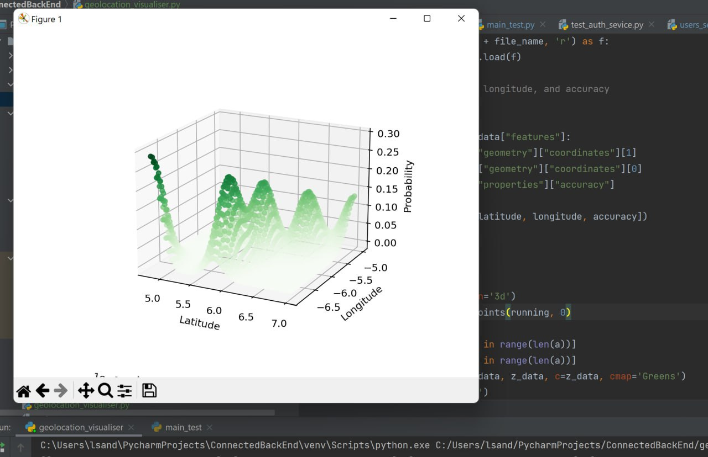

Past startup · Co-Founder & Backend Developer · July 2023–November 2024
Orb
A social app that translated location and activity into descriptive statuses rather than displaying friends’ exact coordinates.
The product and my role
Orb combined location, activity and music information to produce statuses such as staying at a café or running in a green area. I built the Python backend, authentication and data-processing logic, and coordinated work across a three-person team. Other team members handled the mobile frontend.
Orb is a past venture. Its historical beta is no longer accepting new testers.


Archived product screens. My contribution was the backend and status-processing logic, rather than the mobile UI.
From coordinates to meaningful statuses
My initial approach used a Gaussian function to represent the likelihood of being at a place. Irregular update intervals and complex building geometry made that approach difficult to use reliably.
I moved to fuzzy-logic rules combining information such as building proximity, movement and activity. This helped distinguish situations such as staying in a building from passing it. It was custom rule-based processing, rather than a trained machine-learning model.

Backend and debugging tools
I built JWT-protected APIs and used GCP/Firebase for the backend. To investigate the status algorithm, I also developed a Telegram reporter that could show inferred statuses, surface server errors and replay captured test data.
The user-facing app showed abstract statuses rather than exact locations. The separate debugging workflow supported test-data logging and replay; these are distinct from the information displayed to friends.
Read about the Connected Status Reporter →What I learned
The venture did not continue, but it gave me experience of translating ambiguous real-world signals into useful product behaviour, building backend services and coordinating a small team. The debugging tools were especially useful for making the algorithm’s behaviour inspectable.